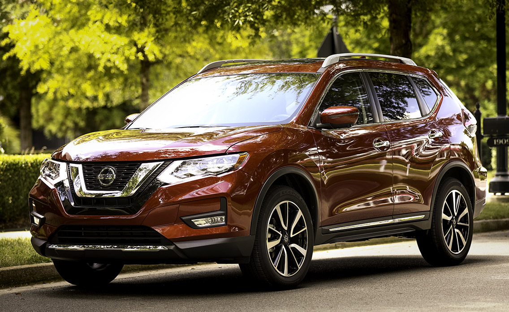

.png)
BEM-VINDO AO ROTA4RODAS!
Somos o seu destino definitivo para tudo relacionado a carros. Desde dicas de manutenção e análises detalhadas de veículos até as últimas novidades do setor automotivo, o Rota4Rodas está aqui para guiá-lo em cada etapa da sua jornada sobre quatro rodas.

SEDANS
Não há veículo da moda que consiga desbancar os clássicos sedans – tanto que seus principais representantes, Toyota Corolla e Honda Civic, sempre aparecem no ranking dos mais vendidos do mundo. Já era a categoria principal, onde todas as montadoras investiam pesado para obter a maior parte.
Embora os SUVs tenham diminuído suas vendas, eles ainda recebem atenção suficiente. A principal característica dos sedans é o conforto e a versatilidade, pois funcionam bem para solteiros e famílias grandes.
Por terem a traseira comprida, isso tem como reflexo o porta-malas espaçoso, que faz da categoria uma das preferidas das famílias. Mas o mesmo comprimento também pesa contra em alguns casos, como encontrar vagas de estacionamento em lugares disputados.
O preço de um sedan pode variar de acordo com o modelo e a versão do carro:
- O New City Sedan da Honda tem preço sugerido a partir de R$ 140.500,00, mas o valor pode variar de acordo com a tributação e alíquotas de cada estado.
- O Fiat Cronos Drive 1.0 tem preço de R$ 93.990,00.
- O Hyundai HB20S tem preço mínimo de R$ 94.190,00.
- O Renault Logan tem preço mínimo de R$ 94.810,00.
- O Chevrolet Onix Plus tem preço mínimo de R$ 97.930,00.
Existem três tipos de sedans no mercado: compacto, médio e premium.
HATCH
É comum que determinados modelos venham em duas versões : sedã e hatch . Portanto, a segunda é mais enxuta e ideal para solteiros ou famílias pequenas que não ocorrem de muito espaço para as bagagens, enquanto a primeira tem uma coincidência maior.
É importante saber que essas duas categorias têm algumas versões, sendo divididas em veículos compactos e médios, o tendo a ser proporcional ao tamanho : os compactos são os veículos de entrada, mais baratos, enquanto os médios são maiores, contam com mais equipamentos e sobretudos.


O preço dos carros hatch pode variar de acordo com o modelo e a versão:
- Chevrolet Onix 2025: A partir de R$ 90.190,00
- Citroën C3 Live 1.0: R$ 74.790
- Fiat Argo 1.0: R$ 84.990
- Hyundai HB20 Sense Plus: R$ 86.090
- Mini Cooper S: A partir de R$ 239.990,00
SUV
O termo SUV significa, em inglês, sport-utility vehicle, ou seja, veículo utilitário-esportivo. Os modelos disponíveis do mercado podem apresentar características mais utilitárias ou esportivas. Portanto, é normal que o modelo funciona bem em as duas funções.
Os primeiros SUVs eram basicamente caminhonetes cobertas. A carga é uma característica bastante presente, mais a focus nas pessoas é maior hoje em dia. O termo "crossover" surge assim, referindo ao vehicleo que faz a transição entre essas funções. A crossover never has the strength of an original SUV.
A visão que o SUV proporciona para dirigir é uma das características principais, já que é mais alto que outros carros, o que o torna un dos tipos de carros mais apreciados pelos motoristas.
O preço de um suv pode variar de acordo com o modelo e a versão do carro:
- Fiat Pulse Drive 1.3 MT: R$ 95.290 O Fiat Pulse é o SUV zero km mais barato à venda no Brasil.
- Peugeot 2008 Allure 1.6 AT6 2023: R$ 99.990
- Renault Duster Zen 1.6 MT: R$ 102.290
- Citroën C4 Cactus Live 1.6 AT: R$ 106.990
- Nissan Kicks Sense MT: 109.290
Consideramos apenas a versão mais barata de cada modelo.
CROSSOVER E PICKUPS
O crossover é um tipo de carro mais novo que reúne características de veículos comuns e de SUVs, transitando entre as duas categorias. É como um quase-SUV. A ideia por trás do crossover é entregar uma eficiência e conforto de um sedan com uma posição mais alta de direção, maior capacidade de carga e natureza de esportivo. O crossover é um utilitário com estrutura maior. Costumam ser mais eficientes que SUVs pela sua estrutura. Quem não precisa da robustez de um SUV pode achar no crossover uma opção.
Os trucks são popularmente conhecidas como picapes (ou pick-ups) no Brasil. Antigamente seu objetivo era carregar carga em áreas rurais. As picapes atuais também são feitas para o conforto dos passageiros, com adicionais de luxo e mais tecnologia. Em alguns países, a picape é mais vendida que carros compactos, como sedans.
reunimos cinco opções com até 10 anos de uso para quem quer uma caminhonete para chamar de sua:
- Picape: Até 80 mil – Volkswagen Saveiro Highline 2018
- Picape: Até 100 mil – Fiat Strada Volcano 2021
- Picape: Até 120 mil – Ford Ranger Limited 2014
- Crossover: Chevrolet Blazer EV: Aproximadamente R$ 280 mil para modelos mais antigos.
- Crossover: Volvo XC40: Modelos de 2018 a 2024 têm uma faixa de preço variada, que você pode consultar na KBB2.